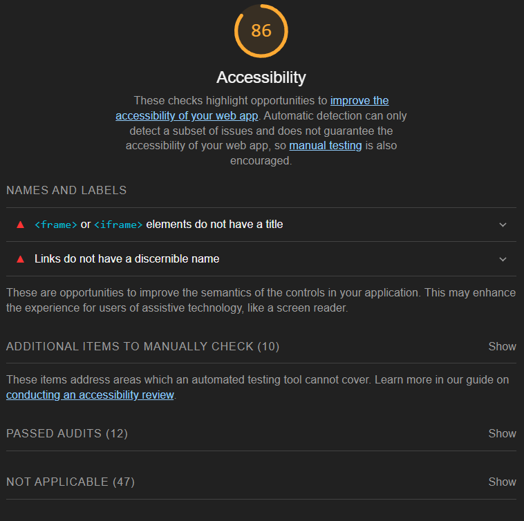

Analyse
Skobutikken selger produkter til en bred målgruppe. Butikken er rettet mot kunder i Norge.
Søkeord
Søkeordene har jeg funnet ved å se på søketrendene til relevante ord inne på Google Trends.
Jeg har valgt ordene som viser søkeaktivitet i de fleste regioner i landet i løpet av det siste året.
Index
Relevante søkeord man finner i header:
- Sko
- Sko herre
- Sko dame
- Sko barn
Generelle søkeord:
- Fottøy
- Skobutikk
- Sko dame 2023
- Sko herre 2023
- Julegave sko
- Sko tilbud
- Sko salg
Produkt
Produktrelaterte søkeord:
- Herresko
- Pensko
- Dressko
Lighthouse resultater for Index

Performance


Best practices
Bilder med lav oppløsning

Lighthouse resultater for Index desktop
Performance desktop

Best practices desktop
Bilder med lav oppløsning

Resultater SEO
Index

Produktside
Handlekurv

Sidene mangler en meta description (meta name="description" content=""). En meta description er en tekstlig forklaring på hva siden inneholder. Søkemotorer kan hente denne teksten og vise den i søkeresultatene.
Resultater SEO desktop
Index

Produktside desktop

Handlekurv desktop
Resultater UU
Index
Produktside
Handlekurv
Resultater UU Desktop
Index
Produktside Desktop
Handlekurv Desktop
ChatGPT SEO og UU analyse
Index

Produktside

Handlekurv

Webaim
Webaim viser nettsidens strukturelle elementer, funksjoner og eventuelle error. Webaim viser hvor alle disse elementene er lokalisert visuelt. Verktøyet lar deg også teste farger i sanntid for å sjekke om kontrasten blir godkjent i henhold til WCAG (Web Content Accessibility Guidelines).
Index
Her ser man at jeg fikk feil på kontrasten til logoen etter WCAG.
Produktside

Handlekurv

Tabell
Hvilke analyseringsverktøy reagerer på hva?
Verktøyene reagerer ulikt på noe av koden de finner
Rød = Nevner feil/error
Grønn = Nevner ingen feil
| Resultat | ChatGPT | Lighthouse | Webaim |
|---|---|---|---|
| Kontrastfeil | Ja | Ja | Ja |
| LANG-attributt | Ja | Ja | Ja |
| Bilder har Alt-attributt | Ja | Ja | Ja |
| Responsivt design | Ja | Ja | Nei |
| Mangler meta-beskrivelse | Nei | Ja | Nei |
| Mangler linknavn/tekst | Nei | Ja | Nei |
| Nøkkelord | Ja | Nei | Nei |
| Søk mangler label | Nei | Nei | Ja |
Forbedringer
Kontrast
Her fikset jeg problemet med kontrasten ved å bruke webaim. Verktøyet lar meg justere fargene i sanntid for å se hva som blir godkjent og ikke. Så kopierte jeg fargekoden #AA5708 og byttet den med den eksisterende fargen i CSS.
Så ble fargene godkjent i webaim.
Mangler meta-beskrivelse
Meta-description er en kort beskrivelse av nettsiden som vises når nettsiden dukker opp i en søkemotor. Her har jeg lagt til meta name="description" på alle sidene:


Forsiden har naturligvis en beskrivelse av hele nettstedet, mens beskrivelsene av de andre sidene er mer spesifikke for deres innhold.
Linktekst mangler
Lighthouse ønsker at jeg legger til aria-labels etter href.
Teksten skal si noe om hva linken gjør slik at brukere som benytter skjermleser skal vite hva som skjer når linker trykkes.
Jeg har lagt til aria-labels slik:

Der jeg har brukt "onclick" skal tabindex="0" legges til (https://dequeuniversity.com/rules/axe/4.8/link-name | Fra lighthouse)


"Missing form label"
Webaim ber om at søkefeltet har en tekst-label:
Link inneholder ingen tekst, webaim.
Webaim rapporterer et problem med linken knyttet til handlekurv-ikonet. Den inneholder ingen tekst.
Det var vanskelig for meg å fortså hvorfor dette problemet dukker opp her. Jeg har lagt til en "p-tag" med beskrivelsen "handlekurv", og gjort selve teksten usynelig i headeren gjennom CSS.

Før og etter forbedringer
Etter disse forbedringene ble implementert økte accessibility og SEO på forsiden:
- +9 accessibility mobile
- +8 SEO mobile
- +2 accessibility desktop
- +10 SEO desktop
SEO
Produktside:
Produktside desktop:
- +8 SEO mobile
- 10+SEO desktop
Handlekurv:
Handlekurv desktop:
- +8 SEO mobile
- +10 SEO desktop
UU
Produktside:
Produktside desktop:
- +8 UU mobile
- +2 UU desktop
Handlekurv:
Handlekurv desktop:
- +8 UU mobile
- +2 UU desktop
Endringene har ført til en økt SEO og UU-score på alle tre sidene.
SEO ble økt fordi alle sidene nå har en meta-beskrivelse.
UU ble økt på grunn av aria-labels, som gjør at alle elementer som linker noe sted har en tekstlig beskrivelse til bruk med skjermlesere.
Det finnes fortsatt et error i UU, jeg vet ikke hvor frame-taggene kommer fra. De finnes ikke i koden min, det finnes ingenting med navn "frame" på noen av sidene mine.
Webaim
Fra 2 til 0 error. Kontrastfeilen er også fikset.
Fra 2 til 0 error.
Fra 2 til 0 error.
Problemene som måtte fikses var å gi søkefeltet en label, skrive tekst innenfor linken i logoen og justere fargen på logoen.
Del 3: Tilgjengelighet
Jeg har testet nettstedet mitt med to forskjellige skjermlesere. Jeg har valgt å bruke Chrome sin screen reader extension, og den innebygde skjermleseren i Windows.
Nettstedet mitt inneholder allerede ARIA-attributter fra forbedringsprosessen i forrige trinn.
Med begge skjermlesere er nettstedet navigerbar, men det fungerer ikke helt optimalt.
Chrome sitt skjermlesningsverktøy leser opp den underliggende HTML-strukturen for det uthevede elementet som standard. Som et eksempel har jeg bilder som linker videre til produktsiden min på forsiden. Når bildeelementet er valgt leser skjermleseren opp "section, article" før den leser opp ARIA-labels. Dette kunne skrus av i innstillingene.
Ved bruk av TAB, enter og piltastene kan man navigere rundt på nettstedet uten å bruke datamus. Med TAB navigerer man ved å highlighte neste klikkbare element nedover i HTML-strukturen. Piltastene tillater scrolling. Dette vil såklart være mindre nyttig hvis brukeren er blind. Enter fungerer som venstreklikk. Chrome-skjermleseren har også en del konfigurerbare tastatur-snarveier.
Windows-skjermleseren leser også opp elementer som highlightes ved bruk av tastatur-navigasjon. Skjermleseren leser ikke opp HTML-strukturen slik som den i Google Chrome, men den forteller hva slags element som er uthevet. Som et eksempel blir bildene på forsiden lest opp som "Kobling, Pensko, [MERKENAVN]". Knappen for å legge til produktet i handlekurven blir lest opp som "Legg i handlekurv, knapp".
En utfordring med verktøyet til windows er at den leser opp alt som er synlig på maskinen, ikke bare nettleseren. Når man har nådd bunn på nettsiden og trykker inn TAB enda en gang begynner skjermleseren og lese opp alle elementene i hele nettleseren om igjen.
Verktøyene fungerer likt på mitt nettsted som hos andre kjente nettbutikker for sko, som f.eks. Eurosko og Dinsko. Disse benytter nok også ARIA-attributter.
Skip til hovedinnhold:
Her har jeg lagt til en skip til main content. Main har da f.eks. id="indexmain" på forsiden.
I CSS har jeg flyttet selve teksten ut av syne:
Del 4: Microdata og Rich results
Jeg har lagt til microdata til min produktside for de elementene som allerede eksisterte på siden.
Det finnes nå microdata for produktet i img, produktnavn, pris/valuta og tilgjengelige størrelser.
Jeg har også lagt inn BreadcrumbList og fått hjem-koblingen, som er det eneste interaktive elementet, til å dukke opp i rich results.
Del 5: Meta og SOME
Jeg har lagt til metadata til Facebook og Twitter for alle tre sidene mine.
Jeg aner ikke hvorfor handlekurv.html vises slik. Metadataen har jeg kopiert fra de to andre sidene for så å kun endre på innholdet. Jeg har lagret alle endringer og kopiert inn i FileZilla flere ganger. På twitter fungerer summary cards fint.